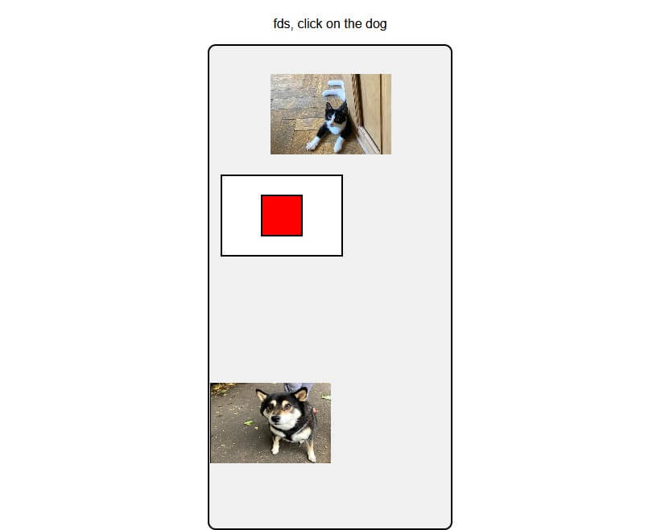

First game release!
Today marks one of the most important steps in our company's
history, as we are almost at the stage of finally hitting the
figurative "Go live" button for our first game project, the
image matching game! After days of work and struggling through
the intricacies and technicalities of the JavaScript canvas and
hours upon hours of debugging, account for every scenario, we
finally feel as though the game is in a state where we are
confident to release it into the world.

Please note that we still have a few more days of extensive
testing and optimizing to perform, and to ensure a flawless
launch, but we are incredibly excited and thankful for all the
hard work that you guys have put into this amazing project, and
look forward to seeing your feedback as we go live.
Personally, the feeling of finally publicly releasing our first
project as we exit Beta-Testing, the start of the next step,
feels like a rite of passage for us. We look forward to meeting
new people, gaining the support of the amazing community, and
releasing our first game into the world.
We cant thank everyone that has supported us up to this point
enough, in particular our staff members Alex and Kit for the
countless hours of dev-time that they have put in to making sure
that our games have the smoothest and most enjoyable launch
possible, and a huge shoutout to our many followers and the
countless messages of support that have inspired us to push
through and make games in the first place.
Here's to the beginning of an amazing journey!
-James March
Meet our new staff member...
Today is a landmark day for James' Games as a company, as we
expand our workforce 50%, going from a two to three staff. At
the forefront of this is our new lead designer, Sam Forward.
As a fan of his previous work, the natural step for James was to
choose Sam to lead our efforts as a designer and lead the
expansion of the production and delivery of the company. Sam is
not only a talented designer, but is a seasoned producer with
years of experience in working with large and complex
development studios.
"I have no doubt that as Sam is exactly what we have been
lacking, and can help add a visual flare to our projects that
you just wouldn't get with our other staff members, as the other
two of us are just programmers" founder James said, and it is
this experience that really shows promise for the future of the
company. The workflow can be improved and made more efficent and
so more and more games can look to be produced.
In other news, the paper work has been completed and we're now
past the design phase for our first game. The company will be
using JavaScript produce games to completion. Many of the art
assets have been created already and they couldnt be happier
with where they are on the production pipeline now that this new
staff member has been hired.
Make sure to follow the teams social media accounts to keep
track of where we are in our release schedule and keep your eyes
posted for projects in the near future, we as a team cannot wait
to show you what we have in store for you all.
-Dan Hebert
James' Games Founded
James' Games has been founded and we couldn't be more excited to
open our doors to the internet community. We're thrilled to
offer a fantastic alternative to traditional learning games
and provide a service and product that you can't find anywhere
else.
We are currently knee deep in developing a remarkable range of
learning games, specifically tailored for children who are just
starting their learning adventure. You'll find an engaging mix
of games such as our image selection game where players get to
choose from a selection of images and aim to choose the correct
option, and recieve feedback based on how they do.
We are a small team of two members and setting up this venture
has been a real challenge but it is with pride that we can
finally endeavour on this journey. Our pride comes with learning
how to release an app into the world!
Whilst creating the desktop version of our first game, we
realised that it was not going to be enough and required
something new in order to engage the younger generations, so we
looked back and started over, with a mobile-first approach to
game development, never has learning been more accessible
digitally.
We look forward to seeing the response to our projects and
company, and cannot wait to work with clients and users in the
future to deliver the best products possible.
-James March